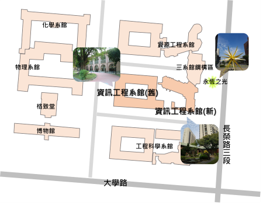

自行開車（國道路線）
南下：
沿國道一號南下 下永康交流道右轉 沿中正北路、中正南路（南向）往台南市區直行
中華路左轉 沿中華東路前進 於小東路口右轉，直走即可抵達本校。
【自國道三號北上者，轉86號快速道路（西向），可接國道一號（北向）】
北上：
沿國道一號北上 下仁德交流道左轉 沿東門路(西向)往台南市區直走 遇林森路或長榮路右轉(北向)，即可抵達本校。
【自國道三號北上者，轉86號快速道路（西向），可接國道一號（北向）】
搭乘火車
於台南站下車後，自後站出口（大學路），大學路左側即為本校光復校區。繼續往前步行，經過勝利路之後，左手邊即為成功校區。
搭乘高鐵
搭乘台灣高鐵抵台南站者，可至高鐵台南站二樓轉乘通廊或一樓大廳1號出口前往台鐵沙崙站搭乘 台鐵區間車前往台南火車站， 約30分鐘一班車，20分鐘可到達台南火車站；成功大學自台南火車站後站步行即可到達。
校區地圖
